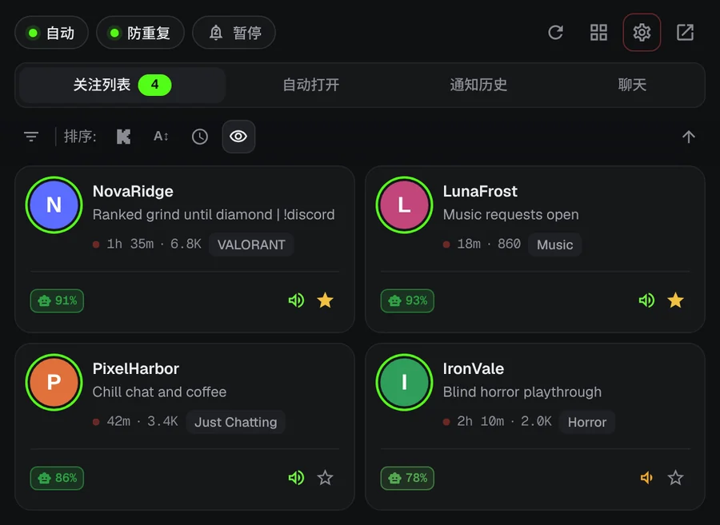
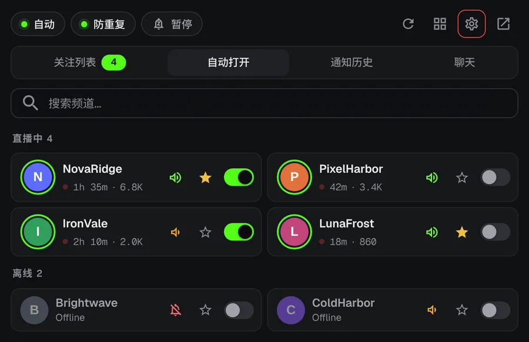
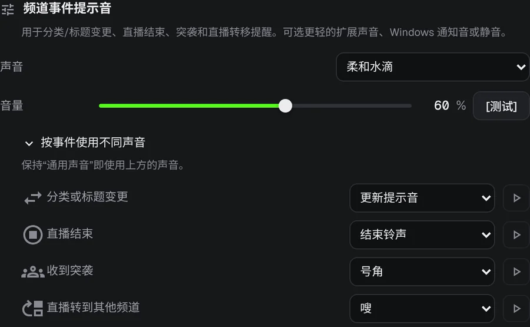
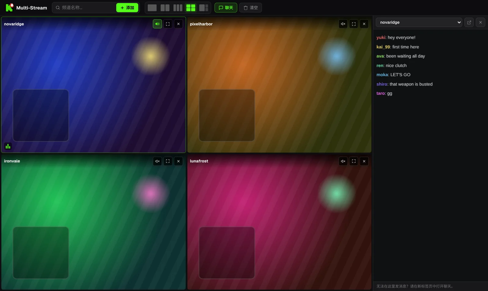

再也不错过 Kick 直播的开场。
你喜欢的主播凌晨 3 点开播。即使没有打开 Kick 标签页，KickAlert 也会在那一刻发出桌面通知。免费，不限频道数量，不追踪。
Edge 和 Opera 版本即将推出
凌晨 3 点，你本来应该在睡觉。
 KickAlert
KickAlert试一试。按一下铃铛。
这些频道现在都未开播。打开其中一个的铃铛，看看开播时会发生什么。
即时提醒
KickAlert 监听 Kick 的实时连接，所以开播那一刻就会提醒你，而不是几分钟之后。可以为每个频道选择提示音、设置免打扰时段，或者全部暂停到早上。

自动打开
选择要自动打开的频道。一开播就会在新标签页中打开，不会重复打开；如果突袭把直播转到别的频道，标签页还可以自动关闭。

发生了什么一目了然
突袭、下播、分类变更和直播转移，都可以按频道分别设置提醒和提示音。

聊天雷达
你的名字或指定词语出现在最多 5 个频道的聊天中时，即使 Kick 已关闭也会提醒你。聊天过滤器会隐藏刷屏，还能识别用形近字母写的词。
改一下名字，看看聊天。
一个标签页最多看四路直播
直播开始时默认静音。点一下就能打开你想听的那一路。聊天在侧边面板里。

直播画面仅为示意。
你的数据只留在浏览器里
- 没有统计分析，没有追踪
- 只与 kick.com 通信
- 首次启动时说明每项权限
- 源代码公开在 GitHub
常见问题
KickAlert 免费吗？
免费。所有功能都免费，关注的频道数量也没有限制。
需要一直开着 Kick 吗？
不需要。KickAlert 在后台运行，即使没有打开任何 Kick 标签页也会提醒你。只要在同一个浏览器里登录 Kick 即可。
装好了却收不到通知。
新安装时频道提醒默认关闭，免得通知太多。打开想要的频道上的铃铛，或者在设置里一次为所有频道打开。每个频道设置里的“会收到这个频道的通知吗？”检查，会列出其他可能挡住提醒的原因。
支持哪些浏览器？
目前支持 Chrome 和 Firefox，Edge 和 Opera 版本即将推出。Brave、Vivaldi 等 Chromium 浏览器可以从 Chrome 网上应用店安装。
安装 KickAlert
Edge 和 Opera 版本即将推出